Imbalanced classification: pitfalls and solutions#
Imbalanced classification refers to issues where the balance of the class frequencies in the target variable creates additional challenges for the classification problem. We focus on two particular issues related to imbalanced classification.
The first issue is related to a large difference between the class frequencies in the target variable. It means that the event of interest to predict is rare. As an example, in fraud detection, the event of interest is a fraudulent transaction and is much less common than legitimate transactions. A large class imbalance can result in degenerate predictive model performance when evaluated naively. In this notebook, we first focus on studying this use case that is often not correctly addressed in many educational resources.
The second issue is related to the fact that the data acquisition process itself might not reflect the true class balance. This means that the class frequencies in the target variable are not representative of the true class balance. As an example, for medical diagnosis, the data acquisition process may be biased towards patients with a rare disease by collecting equal numbers of patients with the disease and equal numbers of patients without the disease. Therefore, there is a need to correct this bias. This will be the focus of the next notebook.
Class imbalance: representative data acquisition with rare events of interest#
In real-world applications, we commonly need to predict rare events, e.g. frauds, rare diseases, rare climatic events, etc. Simplifying this problem to a binary outcome, it means that the probability for the event of interest is low, typically lower than a few percents.
To cover the implications of class imbalance, we first generate a synthetic dataset for which we control the rate of the positive class. We define the generative process below as follows:
We generate a vector of coefficients
true_coefof shape(n_features,)where each element is a standard normal random variable. In short, it is the true model that we would like to learn.We generate a matrix of features
Xof shape(n_samples, n_features)where each column is a standard normal random variable.We compute the linear predictor
zas the dot product of the features and the vector of coefficientstrue_coef.We transform the linear predictor
zinto class probabilities using the sigmoid function. To create rare positive events, we shift the intercept of the sigmoid function.Finally, we generate a binary target variable
ywhere we sample each event by drawing a sample from a binomial distribution withn=1andpbeing the probability of the positive class we previously computed.
import matplotlib.pyplot as plt # needed for pandas in jupyterlite.
import numpy as np
import pandas as pd
from scipy.special import expit
rng = np.random.default_rng(0)
n_samples, n_features = 1_000_000, 5
true_coef = rng.normal(size=n_features)
X = rng.normal(size=(n_samples, n_features))
z = X @ true_coef
true_intercept = -4
y = rng.binomial(n=1, p=expit(z + true_intercept))
# Wrap as pandas data structures for convenience.
X = pd.DataFrame(X, columns=[f"feature_{i}" for i in range(n_features)])
y = pd.Series(y, name="target")
Recall that the expit function, also known as the logistic sigmoid function,
is defined as expit(x) = 1 / (1 + np.exp(-x)) and looks as follows:
_, ax = plt.subplots()
z = np.linspace(-10, 10, 100)
ax.plot(z, expit(z))
_ = ax.set(
title="Sigmoid/Expit function",
xlabel="Linear predictor",
ylabel="Probability",
)
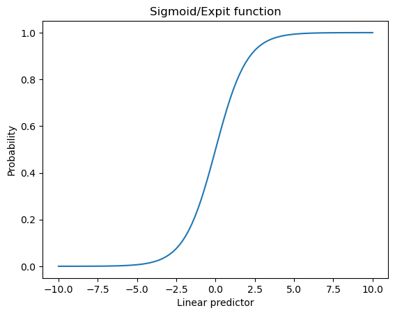
The expit function allows to transform the linear predictor into probabilities between 0 and 1. The role of the intercept is to shift the sigmoid function to the left or right.
Let’s look at the true target and especially the relative class frequencies and absolute counts.
print(f"Relative class frequencies:\n {y.value_counts(normalize=True) * 100}")
Relative class frequencies:
target
0 97.5037
1 2.4963
Name: proportion, dtype: float64
print(f"Class counts:\n {y.value_counts()}\n")
Class counts:
target
0 975037
1 24963
Name: count, dtype: int64
Looking at the true target distribution, we therefore observe that the probability for a sample to be the positive class with label 1 is rare (~2.5%). Regarding absolute counts, because we generated 1,000,000 samples, the number of events of interest is high enough to train a machine learning model (25,000).
A particular challenge when dealing with real-world class imbalance is that the number of available samples of the rare event is usually low even with a large number of samples. Therefore, it is always important to check the absolute counts of the rare event and if the dataset contains less than 1,000 samples of the rare event, then you will face the usual challenges of training a machine learning model on a dataset with a small number of data points: large variance of the estimator, weak signal, catastrophic overfitting, etc.
Learning a predictive model#
Here, we know that our generative process was intentionally crafted to sample the target variable from the prediction function of a logistic regression model. Therefore, fitting a logistic regression model on this data might be able to recover the true model.
from sklearn.linear_model import LogisticRegression
model = LogisticRegression(penalty=None).fit(X, y)
Let’s check if the learned model is able to recover the true model.
comparison_coef = pd.DataFrame(
{
"Data generating model": np.hstack((true_intercept, true_coef)),
"Unpenalized logistic regression": np.hstack(
(model.intercept_, model.coef_.flatten())
),
},
index=np.hstack(["intercept", model.feature_names_in_]),
)
ax = comparison_coef.plot.barh()
_ = ax.set(
title="Comparison of the true and learned model coefficients",
xlabel="Coefficient value",
ylabel="Feature",
)
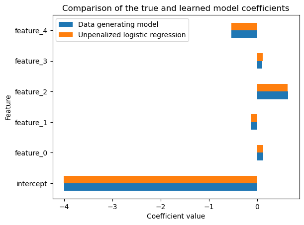
We observe that the learned model is able to recover the true model coefficients. However, be aware that it is not always necessarily the case, as illustrated in the following exercise.
Exercise#
Write a small function that embeds the generative process that we defined above. This time only generate 10,000 samples, train a logistic regression model and check the learned model coefficients. Make sure to pass the same true coefficients than in the previous exercise.
Do you recover the true model coefficients? If not, what is the reason?
# TODO: write your code here!
# Do not scroll too quickly!
Solution#
def generate_imbalanced_dataset(true_coef, true_intercept, n_samples=10_000, seed=0):
rng = np.random.default_rng(seed)
# We can sample a new design matrix but we need to keep the same true coefficients.
X = rng.normal(size=(n_samples, true_coef.shape[0]))
z = X @ true_coef
y = rng.binomial(n=1, p=expit(z + true_intercept))
# Wrap as pandas data structures for convenience.
X = pd.DataFrame(X, columns=[f"feature_{i}" for i in range(X.shape[1])])
y = pd.Series(y, name="target")
return X, y
X_exercise, y_exercise = generate_imbalanced_dataset(
true_coef, true_intercept, n_samples=10_000, seed=1
)
model_exercise = LogisticRegression(penalty=None).fit(X_exercise, y_exercise)
comparison_coef_exercise = pd.DataFrame(
{
"Data generating model": np.hstack((true_intercept, true_coef)),
"Unpenalized logistic regression": np.hstack(
(model_exercise.intercept_, model_exercise.coef_.flatten())
),
},
index=np.hstack(["intercept", model_exercise.feature_names_in_]),
)
ax = comparison_coef_exercise.plot.barh()
_ = ax.set(
title=(
"Comparison of the true and learned model coefficients\n"
"trained on a smaller dataset"
),
xlabel="Coefficient value",
ylabel="Feature",
)
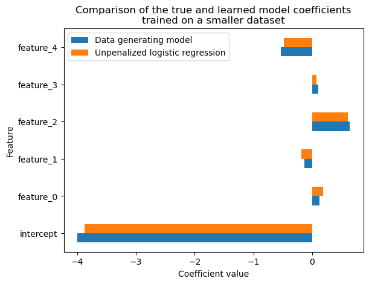
We observe that we have a larger difference between the coefficients of the true generative process and the learned model and that furthermore, the learned model has a larger variance (different coefficients when we vary the seed used to sample the training set).
The reason is that the coefficients of the generative process can only be recovered if the following assumptions are met:
We have access to an unlimited number of labeled training data points. As the sample size increases, the coefficients of the predictive model will get closer to the true coefficients.
The predictive model should be well specified. In other words, if our predictive model is not flexible enough then it will underfit and not recover all the signal of the true model.
The training process converges to a minimum of a strictly proper scoring rule computed on the training set.
Let us explain the meaning of this last assumption. We are interested in assessing the quality of the probabilistic predictions made by our model:
y_proba = model.predict_proba(X)
y_proba = pd.DataFrame(y_proba, columns=["p_hat(y=0)", "p_hat(y=1)"])
y_proba
| p_hat(y=0) | p_hat(y=1) | |
|---|---|---|
| 0 | 0.949956 | 0.050044 |
| 1 | 0.992806 | 0.007194 |
| 2 | 0.991267 | 0.008733 |
| 3 | 0.993746 | 0.006254 |
| 4 | 0.990541 | 0.009459 |
| ... | ... | ... |
| 999995 | 0.991282 | 0.008718 |
| 999996 | 0.972341 | 0.027659 |
| 999997 | 0.974709 | 0.025291 |
| 999998 | 0.964693 | 0.035307 |
| 999999 | 0.966115 | 0.033885 |
1000000 rows × 2 columns
_ = y_proba.plot.hist(
bins=100, figsize=(10, 5), subplots=True, layout=(1, 2), sharey=True
)
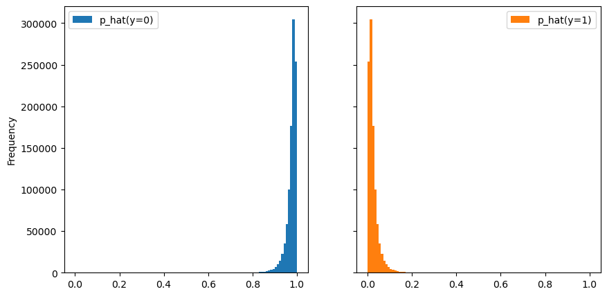
bins = np.linspace(0, 1, 300)
_ = (
pd.concat([y_proba, y.to_frame()], axis=1)
.groupby("target")["p_hat(y=1)"]
.plot.hist(bins=bins, alpha=0.5, legend=True, density=True)
)
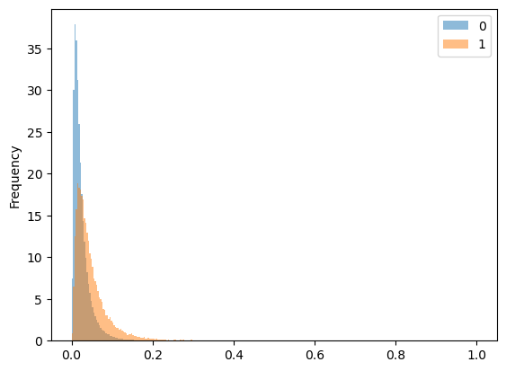
Our predictive model estimates the probabilities of the class of interest (i.e.
p_hat(y=1)). However, those probabilistic predictions do not necessarily reflect the
true probabilities.
First, we can quickly compute the (marginal) mean of the estimated probabilities and check if we are close to the true probability of the positive class.
y_proba.mean() * 100
p_hat(y=0) 97.503089
p_hat(y=1) 2.496911
dtype: float64
y.value_counts(normalize=True) * 100
target
0 97.5037
1 2.4963
Name: proportion, dtype: float64
This confirms that the probabilistic predictions of our model are meaningful, at least from a marginal point of view.
The reason is that the learning algorithm used by LogisticRegression successfully
minimized the log-loss on the training set. The log-loss is a “strictly proper”
scoring rule. A strictly proper scoring rule is minimized if and only if the model
predictions exactly match the data generating process.
The three above conditions work together: the strictly proper scoring rule provides the right objective from a probabilistic prediction point of view, the well-specified model ensures the true coefficients exist within the model’s parameter space, and the unbounded sample size prevents overfitting: the optimum reached on the training set matches the expected optimum on the test set.
Since our classifier has successfully converged to the parameters of the data generating process, we would expect our classifier to be well calibrated. We can check that by plotting the calibration curve.
from sklearn.calibration import CalibrationDisplay
display = CalibrationDisplay.from_estimator(model, X, y, n_bins=10, strategy="quantile")
_ = display.ax_.set_title("Calibration curve of the unpenalized logistic regression")
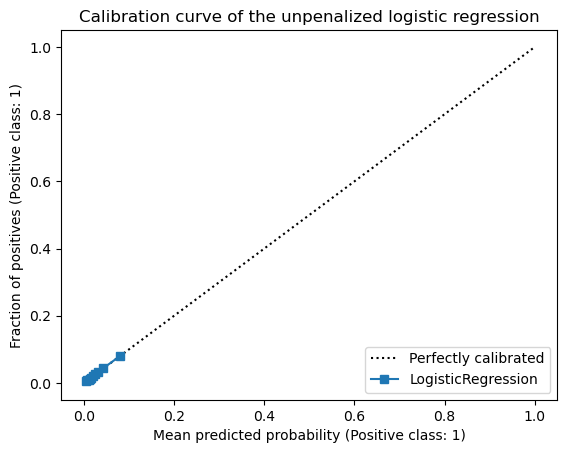
Since we have rare events, most data points have low predicted probabilities for the positive class and the quantile-based strategy will not show a curve on the right-hand side of the plot. Let’s zoom in on the plot to better see the curve.
display.plot()
axis_lim = (
min(display.prob_true.min(), display.prob_pred.min()) * 0.9,
max(display.prob_true.max(), display.prob_pred.max()) * 1.1,
)
_ = display.ax_.set(
xlim=axis_lim,
ylim=axis_lim,
title="Calibration curve of the unpenalized logistic regression",
)
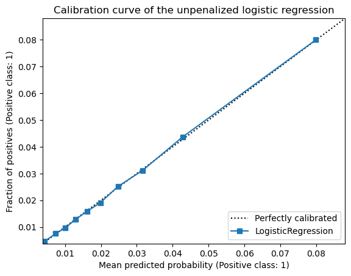
We observe that our logistic regression model is well calibrated as the curve is close to the diagonal line. This is a direct consequence of the fact that the probabilities estimated by the model are close to the true probabilities.
From predicted probabilities to predicted outcomes (and to operational decisions)#
Up to this point of the notebook, we have not encountered any real issues due to the fact that our dataset is imbalanced: with enough data points, a well-specified model minimizing a strictly proper scoring rule, everything seems to be fine.
However, practitioners have been complaining for many years regarding the above setting. Indeed, practical issue often arise when naively translating the estimated probabilities into predicted classification outcomes.
In classification, the predicted outcomes correspond to the classes of the target. As
a general rule, the estimated probabilities of the classifier are processed to predict
a single binary outcome for each sample. In general the most probable class is
selected. For binary classification, it means that the predicted class probability is
thresholded with a decision cut-off value set at 0.5. In scikit-learn, this happens in
the predict method. Let’s check the link between the predict_proba and predict
methods.
y_pred = model.predict(X)
y_proba = model.predict_proba(X)
np.allclose(y_pred, y_proba[:, 1] > 0.5)
True
Discrete binary classification outcomes are typically evaluated with dedicated metrics. Those binary classification metrics for discrete prediction outcomes are all derived from the confusion matrix: indicating the number of true positives, true negatives, false positives and false negatives.
from sklearn.metrics import ConfusionMatrixDisplay
display = ConfusionMatrixDisplay.from_predictions(y, y_pred)
_ = display.ax_.set_title("Confusion matrix of the unpenalized logistic regression")
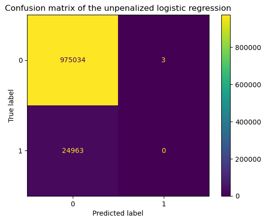
From the confusion matrix above, we can already understand what bothers practitioners: the total number of positive predictions is very close to zero.
One might interpret this to mean that our model is therefore not able to detect rare events and is thus useless. In general, instead of using the confusion matrix, practitioners use different metrics such as the precision, recall, etc. Let’s check the classification report available in scikit-learn that provides a summary of the metrics.
from sklearn.metrics import classification_report
print(classification_report(y, model.predict(X)))
precision recall f1-score support
0 0.98 1.00 0.99 975037
1 0.00 0.00 0.00 24963
accuracy 0.98 1000000
macro avg 0.49 0.50 0.49 1000000
weighted avg 0.95 0.98 0.96 1000000
As expected, the precision and recall for the class of interest are degenerate.
In the next section, we present a popular “solution” implemented by many practitioners to deal with this problem.
What people naively do and why you should not do it#
One of the reasons for not having any true positives in the confusion matrix is that the estimated probabilities for rare events are low because, as previously shown, those events are rare. The second reason is that the features we have access to are not very predictive: a large proportion of the variability of the target is unexplained by the features but instead attributed to unobserved and independent factors.
One way to counter the issue of degenerate classification metrics is to resample the dataset and balance the class frequencies. This means that we artificially increase the number of samples of the rare event and thus the likelihood of the rare event to be detected is higher. When fitting a model on such a resampled dataset, we therefore artificially boost the estimated probabilities for the positive class (as it became less rare in the resampled data).
Let’s use imbalanced-learn to resample the dataset before training a logistic
regression model. When running this notebook under jupyterlite, it is necessary
to pip install imbalanced-learn first:
%pip install -q imbalanced-learn
/home/runner/work/calibration-cost-sensitive-learning/calibration-cost-sensitive-learning/.pixi/envs/doc/bin/python: No module named pip
Note: you may need to restart the kernel to use updated packages.
from imblearn.pipeline import make_pipeline
from imblearn.under_sampling import RandomUnderSampler
# Enforce a 0.7 ratio between the number of data points of the two positive and negative
# classes.
undersampling_model = make_pipeline(
RandomUnderSampler(sampling_strategy=0.7, random_state=0),
LogisticRegression(penalty=None),
).fit(X, y)
Now, let’s repeat the previous experiment and check the confusion matrix and the classification report.
display = ConfusionMatrixDisplay.from_estimator(undersampling_model, X, y)
_ = display.ax_.set_title("Confusion matrix of the under-sampled logistic regression")
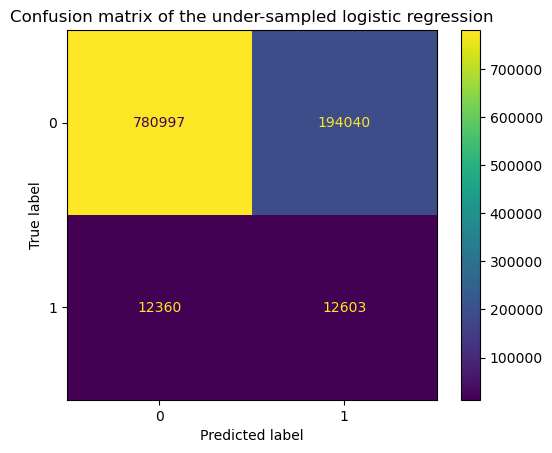
print(classification_report(y, undersampling_model.predict(X)))
precision recall f1-score support
0 0.98 0.80 0.88 975037
1 0.06 0.50 0.11 24963
accuracy 0.79 1000000
macro avg 0.52 0.65 0.50 1000000
weighted avg 0.96 0.79 0.86 1000000
We observe that the number of true positives is now non-zero as well as the precision and recall for the class of interest.
So we might be tempted to conclude that we did the right thing by resampling the dataset. However, here we only looked at the “thresholded” metrics. We should study the calibration of the model.
Since we are working with synthetic data and we have access to the true coefficients of the data generating process, we can also compare the learned coefficients to the true coefficients.
Exercise#
Plot the coefficients of the model and check whether or not the coefficients are close to the true coefficients. Then, plot the calibration curve and check whether or not the model is well calibrated. What do you observe?
# TODO: write your code here.
#
#
#
#
#
#
#
#
#
#
#
#
#
#
#
# Do not scroll too quickly ;)
Solution#
comparison_coef = pd.DataFrame(
{
"Data generating model": np.hstack((true_intercept, true_coef)),
"Model trained on under-sampled data": np.hstack(
(
undersampling_model[-1].intercept_,
undersampling_model[-1].coef_.flatten(),
)
),
},
index=np.hstack(["intercept", undersampling_model[-1].feature_names_in_]),
)
ax = comparison_coef.plot.barh()
_ = ax.set(
title="Comparison of the true and learned model coefficients",
xlabel="Coefficient value",
ylabel="Feature",
)
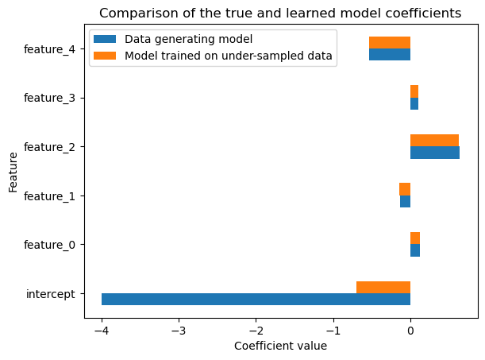
display = CalibrationDisplay.from_estimator(
undersampling_model,
X,
y,
n_bins=20,
strategy="quantile",
name="Model trained on under-sampled data",
)
display.ax_.set_title("Calibration curve of the under-sampled logistic regression")
_ = display.ax_.legend(loc="upper right")
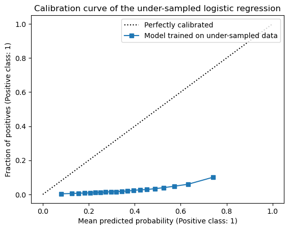
We observe that the coefficients related to the features are close to the true coefficients of the generative model. However, the intercept is completely off. This results in an uncalibrated model as seen in the calibration curve: our model becomes too confident at predicting the (originally) rare event which is not surprising because it is exactly what we intended to do by under-sampling the data points from the negative class.
Exercise#
Since our model is not well calibrated, as an exercise, re-calibrate the model using
the sklearn.calibration.CalibratedClassifierCV and check both the calibration curve,
the confusion matrix, and the classification report. In the CalibratedClassifierCV
set the parameter method="isotonic".
What do you observe?
from sklearn.calibration import CalibratedClassifierCV
# TODO: write your code here.
#
#
#
#
#
#
#
#
#
#
#
#
#
#
#
# Do not scroll too quickly ;)
Solution#
calibrated_model = CalibratedClassifierCV(undersampling_model, method="isotonic")
calibrated_model.fit(X, y)
CalibratedClassifierCV(estimator=Pipeline(steps=[('randomundersampler',
RandomUnderSampler(random_state=0,
sampling_strategy=0.7)),
('logisticregression',
LogisticRegression(penalty=None))]),
method='isotonic')In a Jupyter environment, please rerun this cell to show the HTML representation or trust the notebook. On GitHub, the HTML representation is unable to render, please try loading this page with nbviewer.org.
Parameters
| estimator | Pipeline(step...nalty=None))]) | |
| method | 'isotonic' | |
| cv | None | |
| n_jobs | None | |
| ensemble | 'auto' |
Parameters
| sampling_strategy | 0.7 | |
| random_state | 0 | |
| replacement | False |
Parameters
| penalty | None | |
| dual | False | |
| tol | 0.0001 | |
| C | 1.0 | |
| fit_intercept | True | |
| intercept_scaling | 1 | |
| class_weight | None | |
| random_state | None | |
| solver | 'lbfgs' | |
| max_iter | 100 | |
| multi_class | 'deprecated' | |
| verbose | 0 | |
| warm_start | False | |
| n_jobs | None | |
| l1_ratio | None |
display = CalibrationDisplay.from_estimator(
calibrated_model, X, y, n_bins=20, strategy="quantile"
)
axis_lim = (
min(display.prob_true.min(), display.prob_pred.min()) * 0.9,
max(display.prob_true.max(), display.prob_pred.max()) * 1.1,
)
_ = display.ax_.set(
xlim=axis_lim,
ylim=axis_lim,
title="Calibration curve of the calibrated under-sampled logistic regression",
)
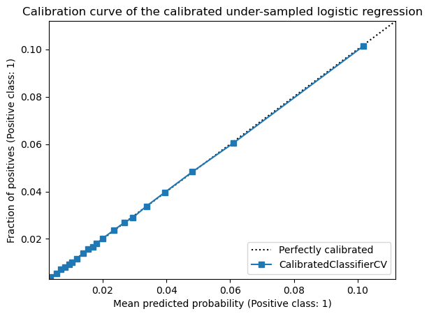
display = ConfusionMatrixDisplay.from_estimator(calibrated_model, X, y)
_ = display.ax_.set_title(
"Confusion matrix of the calibrated under-sampled logistic regression"
)
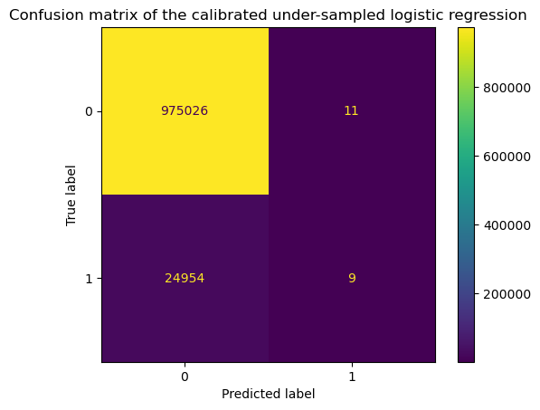
print(classification_report(y, calibrated_model.predict(X)))
precision recall f1-score support
0 0.98 1.00 0.99 975037
1 0.45 0.00 0.00 24963
accuracy 0.98 1000000
macro avg 0.71 0.50 0.49 1000000
weighted avg 0.96 0.98 0.96 1000000
So in terms of calibration, we see that the CalibratedClassifierCV is able to
re-calibrate the model. When looking at the confusion matrix, and the classification
report, we see that we reverted the effect of the resampling and we are back to square
one.
So what is the lesson to learn here?
Resampling acts by artificially shifting the class distribution such that rare events are more likely during the training process. It impacts the predicted outcomes and for the simple case where we have a well-defined linear model, it is equivalent to shifting the intercept. However, the class probabilities predicted by the model trained on resampled data are completely off compared to the true probabilities.
Therefore, it tells us that we should be careful with the choice of evaluation metrics and how it interacts with the choice of the decision cut-off threshold.
Ranking metrics (e.g. ROC AUC) and probabilistic metrics (e.g. log loss) that assess both ranking and calibration of the predictive model at the same time are good choices but they completely ignore the choice of the decision cut-off threshold.
“Thresholded” metrics (e.g. precision, recall) are impacted by the decision cut-off threshold. Therefore, looking such metrics only for a single decision cut-off: can be misleading: the performance metrics can be bad, not because the underlying model is bad but instead because the default choice of the cut-off makes no sense for highly imbalanced classification problems. It is recommended to look at how those metrics change when varying the decision cut-off threshold.
Let’s explore this further in the next section.
Assessing the impact of the decision cut-off on “thresholded” metrics#
In this section, we show two useful meta-estimators available in scikit-learn to set the decision cut-off threshold to change the predicted outcomes of a classifier.
On the one hand, the FixedThresholdClassifier meta-estimator accepts an explicit
value that is used to threshold the estimated probabilities into predicted outcomes.
The value is defined by the user and is not optimized to maximize a specific metric.
On the other hand, the TunedThresholdClassifierCV meta-estimator tunes the decision
cut-off threshold to maximize a specific metric. The metric is defined by the user and
is optimized using cross-validation.
Let’s first demonstrate how to use the FixedThresholdClassifier meta-estimator.
First, let’s define a vanilla logistic regression model since we previously saw that
the resulting model is well calibrated when fitted on the original dataset.
model = LogisticRegression(penalty=None).fit(X, y)
Now, let’s say that we would like to get a model with a specific precision-recall trade-off. For such analysis, we compute the precision and recall as a function of the decision cut-off threshold as well as the precision-recall curve.
import numpy as np
from sklearn.metrics import make_scorer, precision_score, recall_score
# The following functionality is not yet implemented in scikit-learn and we use a bit
# of private API to easily compute the precision and recall as a function of the
# decision cut-off threshold. In the future, you can refer to the following PR that
# implements such functionality:
# https://github.com/scikit-learn/scikit-learn/pull/31338
from sklearn.metrics._scorer import _CurveScorer as CurveScorer
thresholds = np.linspace(0, 1, 100)
precision_curve_scorer = CurveScorer.from_scorer(
make_scorer(precision_score, zero_division=0),
response_method="predict_proba",
thresholds=thresholds,
)
recall_curve_scorer = CurveScorer.from_scorer(
make_scorer(recall_score, zero_division=0),
response_method="predict_proba",
thresholds=thresholds,
)
precision_scores, precision_thresholds = precision_curve_scorer(model, X, y)
recall_scores, recall_thresholds = recall_curve_scorer(model, X, y)
%pip install -q plotly nbformat
/home/runner/work/calibration-cost-sensitive-learning/calibration-cost-sensitive-learning/.pixi/envs/doc/bin/python: No module named pip
Note: you may need to restart the kernel to use updated packages.
import plotly.graph_objects as go
from plotly.subplots import make_subplots
fig_plotly = make_subplots(
rows=1,
cols=2,
subplot_titles=("Precision and Recall vs Threshold", "Precision-Recall Curve"),
horizontal_spacing=0.1,
)
fig_plotly.add_trace(
go.Scatter(
x=precision_thresholds,
y=precision_scores,
mode="lines+markers",
name="Precision",
marker=dict(symbol="cross"),
hovertemplate="Threshold: %{x:.2f}<br>Precision: %{y:.3f}",
),
row=1,
col=1,
)
fig_plotly.add_trace(
go.Scatter(
x=recall_thresholds,
y=recall_scores,
mode="lines+markers",
name="Recall",
marker=dict(symbol="cross"),
hovertemplate="Threshold: %{x:.2f}<br>Recall: %{y:.3f}",
),
row=1,
col=1,
)
fig_plotly.add_trace(
go.Scatter(
x=recall_scores,
y=precision_scores,
mode="lines+markers",
name="PR Curve",
marker=dict(symbol="circle"),
hovertemplate="Recall: %{x:.3f}<br>Precision: %{y:.3f}<br>Threshold: %{text}",
text=[f"{t:.2f}" for t in precision_thresholds],
showlegend=False,
),
row=1,
col=2,
)
fig_plotly.update_layout(
legend=dict(
x=0.35,
y=0.85,
xanchor="left",
yanchor="top",
bgcolor="rgba(255,255,255,0.8)",
bordercolor="rgba(0,0,0,0.2)",
borderwidth=1,
),
hovermode="closest",
width=1200,
height=500,
)
fig_plotly.update_xaxes(title_text="Threshold", range=[0, 1], row=1, col=1)
fig_plotly.update_yaxes(title_text="Score", range=[0, 1], row=1, col=1)
fig_plotly.update_xaxes(title_text="Recall", range=[0, 1], row=1, col=2)
fig_plotly.update_yaxes(title_text="Precision", range=[0, 1], row=1, col=2)
fig_plotly.show()
Using these curves, we now can make a choice regarding a specific trade-off between the level of recall and precision for our classifier. Let’s expose a possible use case: our model could be used for predictive maintenance and in this particular setting, we could imagine that operators reviewing cases of rare failures expect a certain level of precision of the automated failure detection system. Otherwise, the system will show too many false positive cases, tiring the operators, leading to potential errors. However, while expecting a certain level of precision, we also would like our automated failure detection system to maximize the recall level.
Thus, by looking at the precision-recall curve above, we could impose a minimum level of precision of 10%. You can mentally draw an horizontal line at 0.1 on the y-axis and then consider all points above this line and seek for the maximum recall and deduce the corresponding optimal threshold. In this case we should find 0.07.
Exercise#
Using the FixedThresholdClassifier meta-estimator, set the decision cut-off
threshold to the value for which the precision and recall curve intersect (i.e.
~0.07). Check the calibration curve, the confusion matrix, and the classification
report.
Is the model the resulting model well calibrated? What are the level of precision and recall of the class of interest?
from sklearn.model_selection import FixedThresholdClassifier
# TODO: write your code here.
#
#
#
#
#
#
#
#
#
#
#
#
#
#
#
# Do not scroll too quickly ;)
Solution#
threshold = 0.07
model = FixedThresholdClassifier(
LogisticRegression(penalty=None), threshold=threshold
).fit(X, y)
display = CalibrationDisplay.from_estimator(model, X, y, n_bins=20, strategy="quantile")
axis_lim = (
min(display.prob_true.min(), display.prob_pred.min()) * 0.9,
max(display.prob_true.max(), display.prob_pred.max()) * 1.1,
)
_ = display.ax_.set(
xlim=axis_lim,
ylim=axis_lim,
title="Calibration curve of the fixed threshold logistic regression",
)
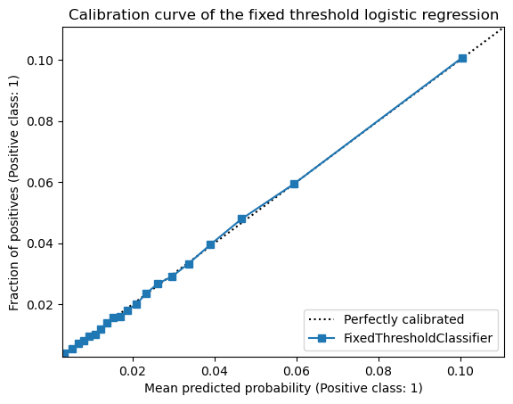
display = ConfusionMatrixDisplay.from_estimator(model, X, y)
_ = display.ax_.set_title("Confusion matrix of the fixed threshold logistic regression")
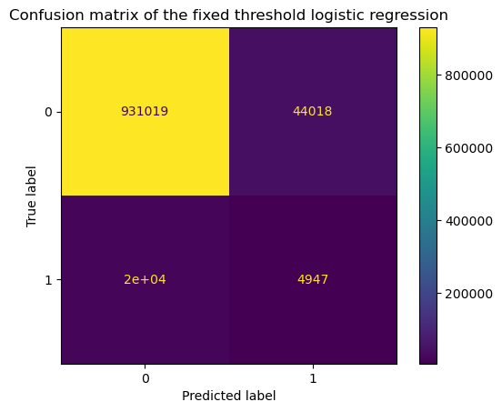
print(classification_report(y, model.predict(X)))
precision recall f1-score support
0 0.98 0.95 0.97 975037
1 0.10 0.20 0.13 24963
accuracy 0.94 1000000
macro avg 0.54 0.58 0.55 1000000
weighted avg 0.96 0.94 0.95 1000000
As expected, we observe that the model is well calibrated because modifying the
decision cut-off threshold does not impact the values returned by the predict_proba
method: the calibration curve remains unchanged.
However, it does impact the binary values returned by the predict method and
therefore the confusion matrix.
With the selected threshold, we expect to have a minimum level of precision of 10% which is exactly what we observe.
While it is an interesting exercise, setting the threshold manually is not the best
practice. It would be better to use the TunedThresholdClassifierCV meta-estimator to
tune the decision cut-off threshold to maximize a specific metric or a specific
trade-off using cross-validation to avoid depending too much on a single train/test
split.
Below, we show a case where we want to maximize the recall score but such that the
model reach a minimum precision score. We therefore need to create a custom function
that can be used by the TunedThresholdClassifierCV meta-estimator.
def maximize_recall_under_constrained_precision(y_true, y_pred, precision_level):
precision, recall = precision_score(y_true, y_pred), recall_score(y_true, y_pred)
if precision < precision_level:
# We reject any model that does not meet the required precision level
# by returning the worst possible score.
return -np.inf
# Otherwise, we want to select the cut-off threshold that maximizes the recall.
return recall
from sklearn.model_selection import TunedThresholdClassifierCV
# Create a scorer that maximizes the recall but such that the precision is at
# least 0.1.
scoring = make_scorer(maximize_recall_under_constrained_precision, precision_level=0.1)
model = TunedThresholdClassifierCV(
estimator=LogisticRegression(penalty=None), scoring=scoring, n_jobs=-1
).fit(X, y)
display = ConfusionMatrixDisplay.from_estimator(model, X, y)
_ = display.ax_.set_title("Confusion matrix of the tuned threshold logistic regression")
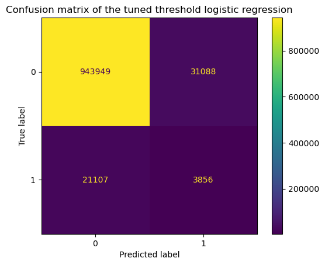
print(classification_report(y, model.predict(X)))
precision recall f1-score support
0 0.98 0.97 0.97 975037
1 0.11 0.15 0.13 24963
accuracy 0.95 1000000
macro avg 0.54 0.56 0.55 1000000
weighted avg 0.96 0.95 0.95 1000000
Looking at the confusion matrix, we observe that we detect a certain number of rare events. Looking into the classification report, we observe that the constraint set on the precision is respected (i.e. the precision is 0.11). For such precision, the maximum recall is 0.15. Now, let’s check what is the decision cut-off threshold that was found during the cross-validation procedure.
float(model.best_threshold_)
0.07943894606514569
Here, we chose to maximize a specific metric under a constraint. It is the best choice
when no “business” metric is known for the machine learning task at hand. However, be
aware that if you have a “business” metric available, then you should use it together
with the TunedThresholdClassifierCV meta-estimator. To see an example, refer to the
notebook entitled “Cost-sensitive learning to optimize a business metrics” from this
course.
Take away#
When working on imbalanced classification problems, using the default decision threshold of 0.5 can lead to seemingly disappointing classification performance when evaluating the model using metrics derived from the confusion matrix (accuracy, precision, recall, F1 score, Matthews correlation coefficient, …).
Resampling the training set, can improve those metrics but at the cost of breaking the calibration of the predicted probabilities.
Instead, we recommend to evaluate and tune the hyper-parameters the models using threshold-independent metrics (such as ROC-AUC, log-loss) and then plot the thresholded prediction metrics for many choices of the cut-off threshold.
Then, we can use the
TunedThresholdClassifierCVmeta-estimator to find the best decision threshold for an explicitly defined trade-off between precision and recall.In later notebooks, we will explore how to deal with a prevalence shift between the available training data and the target deployment setting, how to incorporate business-defined costs into the threshold tuning process and dive deeper into the interplay between ranking performance, calibration and various choices of evaluation metrics.